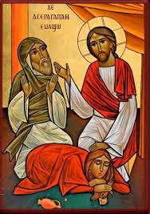
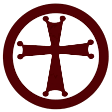

html
Copiar código
<!DOCTYPE html>
<html lang="pt-BR">
<head>
<meta charset="utf-8"><meta name="viewport" content="width=device-width,initial-scale=1">
<title>Terça-feira da Paixão</title>
<meta name="theme-color" content="#5a0010">
<style>
*{box-sizing:border-box} html,body{height:100%}
:root{
  --ouro:#d6b25a; --roxo:#4B0082; --shadow:rgba(0,0,0,.16);
  --fonte: Arial, Helvetica, sans-serif; --verm:#a00000; --bordo:#5a0010;
  --hero-max:588px; /* 420px * 1.4 = 588px (ícone +40%) */
}
body{
  margin:0; font-family:var(--fonte); color:#1a1a1a; background:var(--bordo);
  background-image:
    repeating-linear-gradient(45deg, rgba(75,0,130,.35) 0 3px, transparent 3px 42px),
    repeating-linear-gradient(-45deg, rgba(214,178,90,.30) 0 3px, transparent 3px 42px);
  background-blend-mode: overlay;
  display:flex; flex-direction:column; min-height:100vh;
}

/* Cabeçalho */
header{display:flex;flex-direction:column;align-items:center;text-align:center;padding:12px 12px 0}
.title{
  color:var(--verm); font-weight:900; margin:0; line-height:1.08;
  font-size: calc(1.9rem - 3pt);
  text-shadow:-1px -1px 0 var(--roxo), 1px -1px 0 var(--roxo), -1px 1px 0 var(--roxo), 1px 1px 0 var(--roxo);
}

/* Área principal */
.wrap{width:100%;max-width:720px;margin:0 auto;padding:10px 16px 4px}

/* Ícone 40% maior e com um pequeno espaço para os botões */
.hero{
  display:block;
  margin:10px auto 10px;        /* mínimo espaço antes dos botões */
  max-width:100%;
  height:auto;
  max-height:var(--hero-max);   /* 588px */
  border:6px solid var(--ouro);
  box-shadow:0 0 0 4px var(--roxo);
  border-radius:12px;
}
.hero[hidden]{display:none}

/* Chip de fallback (aparece se a imagem falhar) */
.chip{
  display:inline-block;margin:8px 0 6px;padding:10px 14px;background:rgba(255,255,255,.92);
  border:3px solid var(--ouro);box-shadow:0 0 0 2px var(--roxo) inset;border-radius:14px;font-weight:800;color:#4B0082
}

/* Botões grandes — próximos ao ícone (sem encostar) */
.buttons{display:flex;flex-direction:column;gap:6px;align-items:center;margin-top:0}
.btn{
  position:relative;display:flex;align-items:center;justify-content:center;gap:.25rem;background:#fff;text-decoration:none;cursor:pointer;
  border:3px solid var(--roxo);box-shadow:inset 0 0 0 3px var(--ouro),0 4px 10px rgba(0,0,0,.15);
  border-radius:18px;padding:10px 20px;
  width:87%;transition:transform .15s ease,background-color .2s ease;
}
.btn:hover{transform:scale(1.02);background:#fff8e8}
.btn img{position:absolute;left:12px;width:26px;height:26px;object-fit:cover;border-radius:50%;border:2px solid var(--ouro)}
.btn .label{display:inline-block;width:100%;text-align:center;color:#4B0082;font-weight:800;line-height:1.15}
.btn .label .top{display:block;font-size:1.02rem;color:#b8860b}
.btn .label .sub{display:block;font-size:.82rem;color:#111}

/* Botão voltar bem próximo ao último botão */
footer{margin-top:2px;text-align:center;padding:4px 0 8px}
.back{
  display:inline-flex;align-items:center;gap:8px;background:#4B0082;color:#fff;text-decoration:none;border:1px solid #2f0656;
  padding:.32rem .5rem;border-radius:9px;font-weight:bold;font-size:.8rem;transform:scale(.5);transform-origin:center;
}
.back:hover{background:#5e1fb0}
</style>
</head>
<body>
<header><h1 class="title">Terça-feira da Paixão</h1></header>

<main class="wrap">
  
  <div id="hero-chip" class="chip" style="display:none">Semana da Paixão</div>

  <section class="buttons" aria-label="Terça-feira da Paixão — opções">
    <a class="btn" href="#"><span class="label"><span class="top">Safro</span><span class="sub">versão curta</span></span></a>
    <a class="btn" href="#"><span class="label"><span class="top">Safro</span><span class="sub">versão longa</span></span></a>
    <a class="btn" href="#"><span class="label"><span class="top">Ramsho</span><span class="sub">versão curta</span></span></a>
    <a class="btn" href="#"><span class="label"><span class="top">Ramsho</span><span class="sub">versão longa</span></span></a>
  </section>
</main>

<footer>
  <a class="back" href="javascript:history.back()" onclick="if(!document.referrer || !document.referrer.includes('paixao.html')) this.href='paixao.html';">← Voltar</a>
</footer>

<script>
  // Se o ícone carregar, mantemos o chip oculto
  const hero = document.getElementById('hero');
  if (hero) {
    hero.addEventListener('load', () => {
      const chip = document.getElementById('hero-chip');
      if (chip) chip.style.display = 'none';
    });
  }
</script>
</body>
</html>
